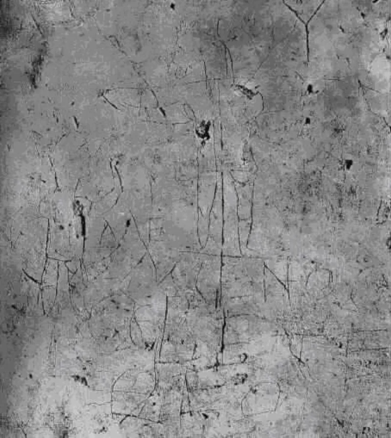
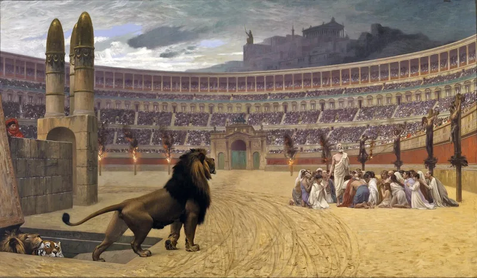

Serious philosophers argue this both ways. Say so before your friend does.
The disciples suffered, and some of them died, rather than deny that they had seen Jesus alive. People will die for what they truly believe.
Nobody dies for a thing they know they made up. And these men were in a place to know.
One: being sincere proves nothing about being right. The 9/11 hijackers died for their faith.
So did Heaven's Gate members, and Jim Jones's flock, and martyrs of every faith on earth. A willingness to die shows belief, and no more.
Two: the record is thin. The New Testament gives one apostle's death.
James son of Zebedee, beheaded by Herod Agrippa I around AD 44 (Acts 12:2).
Thomas speared in India. Bartholomew flayed alive.
Andrew on an X-shaped cross. Peter nailed up head down.
Those come from the apocryphal Acts, written between the second and fourth centuries. Those same texts have talking animals and a smoked fish brought back to life.
Sean McDowell's The Fate of the Apostles (Routledge, 2015) is the fullest Christian study, and he grades the evidence honestly. Well attested: Peter, Paul, James son of Zebedee, and James the brother of Jesus.
John most likely died of old age. Most of the rest is possible but cannot be shown.
Even granting all of it, martyrdom shows only that they believed they had seen Jesus risen. Gerd Lüdemann concedes that easily and calls it a vision.
Here is what still stands. These were not ordinary martyrs.
A Muslim martyr dies for a message he received on someone else's word. A Heaven's Gate member dies for a picture of reality nobody could check.
These men claimed to have eaten with a man they watched die. Either they saw something or they knew they had not.
Paul is the sharpest case. He had been hunting the movement down.
He had every worldly reason to stay out. And 2 Corinthians 11 lists what it cost him, in his own hand.
Contested, because the loud version fails and the careful one holds. It shows they meant it.
It does not show they were right. It rules out a planned fraud, the "they stole the body" theory, and nothing more.
Present it that way, giving away the thin evidence for the other ten up front, and it will hold. Present it as all twelve tortured and none breaking, and you will meet someone who has read McDowell, or Candida Moss's The Myth of Persecution.
"They weren't taking someone's word for it. They said they ate with a man they had watched die."


Dying for a belief shows they meant it, and the records for most are thin.
The skeptic's reply comes in three parts, and the first two are right.
First, sincerity proves nothing about truth. The 9/11 hijackers died for their faith. So did Heaven's Gate members, Jim Jones's congregation, and martyrs of every religion on earth. Willingness to die shows that a person believes what they are saying, and nothing more.
Second, the record for most of the apostles is very thin. Only one apostolic death is reported in the New Testament: James son of Zebedee, beheaded by Herod Agrippa I around AD 44 (Acts 12:2). The vivid traditions come from apocryphal Acts, written between the second and fourth centuries. Thomas speared in India. Bartholomew flayed alive. Andrew on an X-shaped cross. Peter crucified upside down. Those same books also contain talking animals and a resurrected fish. Sean McDowell's The Fate of the Apostles (2015) is the fullest treatment by a Christian scholar, and he grades the evidence honestly. He judges the deaths of Peter, Paul, James son of Zebedee and James the brother of Jesus to be well established. John's death was probably natural. Most of the rest are possible, but not demonstrable.
Third, even granting all of it, martyrdom shows only that the disciples sincerely believed they had seen the risen Jesus. Skeptical scholars such as Gerd Lüdemann concede that already, and explain the belief as visionary experience.
Contested — it rules out fraud, and nothing else, so claim only that.
Graded contested, because the popular version fails and the disciplined version holds. The difference between them is everything.
What survives scrutiny is narrow and real. The disciples were not in the position of ordinary religious martyrs. A Muslim martyr dies for a revelation he received on someone else's testimony. A Heaven's Gate member dies for a metaphysics nobody could check. The disciples are claiming to have eaten with a man they watched die. About that they could not be honestly mistaken, the way a second-hand believer can. Either they saw something, or they knew they had not.
Paul is the sharpest case. He was persecuting the movement and had every worldly reason not to join it, and 2 Corinthians 11 lists what it cost him, in his own hand.
So the argument does real work, but bounded work. It establishes sincerity, not truth. It rules out deliberate fraud — the 'they stole the body and made it up' theory — and it rules out nothing else. Present it that way, with the thin evidence for the ten conceded up front, and it is durable. Present it as 'all twelve apostles were tortured to death and none recanted', and you will meet someone who has read McDowell, or Candida Moss's The Myth of Persecution. Then you lose everything you said before it.